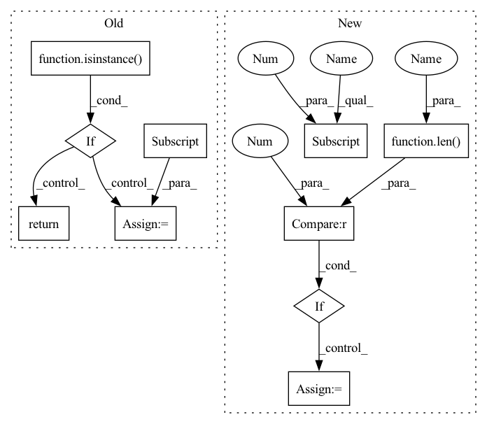

Pattern ID :32979

Before Change
adj = adj.T
if isinstance(adj, Tensor):
return dense_to_sparse(adj)
else:
idxs = np.nonzero(adj)
edge_index = np.stack(idxs)
edge_weights = adj[idxs]
return edge_index, edge_weights
def edge_index_to_adj(edge_index: TensArray,
After Change
edge_attr = adj[index]
if len(index) == 3:
batch = index[0] * adj.shape[-1]
index = (batch + index[1], batch + index[2])
edge_index = backend.stack(index, 0)
In pattern: SUPERPATTERN
Frequency: 3
Non-data size: 10
Instances
Fragment ID: 95468922
Project Name: torchspatiotemporal/tsl
Commit Name: 50089afdf23de12eb6d11e9d5e7e64d949d45611
Time: 2022-08-18
Author: ivan.marisca@hotmail.it
File Name: tsl/ops/connectivity.py
M Class Name: AnonimousClass
N Class Name: AnonimousClass
M Method Name: adj_to_edge_index(2)
N Method Name: adj_to_edge_index(1)
M Parent Class:
N Parent Class:
M File Name: tsl/ops/connectivity.py
N File Name: tsl/ops/connectivity.py
M Start Line: 92
M End Line: 114
N Start Line: 106
N End Line: 145
'>
Before Change
def get_cats(processor, col, stat_name="categories"):
if isinstance(processor, nvtabular.workflow.Workflow):
filename = processor.stats[stat_name][col]
gdf = cudf.read_parquet(filename)
gdf.reset_index(drop=True, inplace=True)
return gdf[col].values_host
else:
return processor.stats["encoders"][col].get_cats().values_host
After Change
def get_cats(workflow, col, stat_name="categories"):
// figure out the categorify node from the workflow graph
cats = [
cg.op
for cg in nvtabular.column_group.iter_nodes([workflow.column_group])
if isinstance(cg.op, nvtabular.ops.Categorify)
]
if len(cats) != 1:
raise RuntimeError("Found {} categorical ops, expected 1", len(cats))
filename = cats[0].categories[col]
gdf = cudf.read_parquet(filename)
gdf.reset_index(drop=True, inplace=True)
return gdf[col].values_host
'>
Fragment ID: 95468924
Project Name: nvidia/nvtabular
Commit Name: 4c92dffac4354d816178264bcfcdec722db2ec1c
Time: 2021-01-05
Author: github@benfrederickson.com
File Name: tests/conftest.py
M Class Name: AnonimousClass
N Class Name: AnonimousClass
M Method Name: get_cats(3)
N Method Name: get_cats(3)
M Parent Class:
N Parent Class:
M File Name: tests/conftest.py
N File Name: tests/conftest.py
M Start Line: 177
M End Line: 183
N Start Line: 178
N End Line: 188
'>
Before Change
adj = adj.T
if isinstance(adj, Tensor):
return dense_to_sparse(adj)
else:
idxs = np.nonzero(adj)
edge_index = np.stack(idxs)
edge_weights = adj[idxs]
return edge_index, edge_weights
def edge_index_to_adj(edge_index: TensArray,
After Change
edge_attr = adj[index]
if len(index) == 3:
batch = index[0] * adj.shape[-1]
index = (batch + index[1], batch + index[2])
edge_index = backend.stack(index, 0)
'>
Fragment ID: 95468926
Project Name: torchspatiotemporal/tsl
Commit Name: f28e5a2fddc34eeb90a13c113512c8ab12b6138b
Time: 2022-07-20
Author: ivan.marisca@hotmail.it
File Name: tsl/ops/connectivity.py
M Class Name: AnonimousClass
N Class Name: AnonimousClass
M Method Name: adj_to_edge_index(2)
N Method Name: adj_to_edge_index(1)
M Parent Class:
N Parent Class:
M File Name: tsl/ops/connectivity.py
N File Name: tsl/ops/connectivity.py
M Start Line: 92
M End Line: 114
N Start Line: 106
N End Line: 145